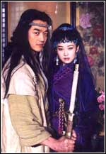
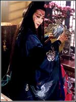
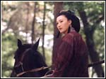

|
|
|
|
剧情简介第一集 令狐冲遵师命与师妹岳灵珊乔装打扮成酒栈伙计，伏于武夷山脚，没想到巧遇魔教长老曲洋。二人意气相投、惺惺相惜，却惹上一段江湖恩怨，卷入到血腥的中心。福威镶局少缥头林平之在山上狩猎，甚是威风，歇脚于令狐冲和岳灵珊的酒栈，和一个余姓青年发生冲突。由于令狐冲暗中相助，余姓青年被杀。这一切看似偶然，却又都在安排之中。林平之回到家中，发生了一连串奇怪的事情，镖局的人接二连三莫名其妙地死去，林家鸡大不宁、鬼影幢幢。 第二集 在余沧海和众弟子的攻击下，令狐冲步步退守，危在旦夕。这时，曲洋身背古琴飘然而至，救下令狐冲；同时，魔教圣姑任盈盈奉日月神教教主东方不败之命来追杀曲洋，令狐冲不顾正邪难容，义救曲洋，并受其之托，答应把焦尾琴带给刘正风。任盈盈感于曲、刘情深，违背教令，放过曲洋。青城派“青城四秀”之一罗人杰及同门押着林震南夫妇在山间赶路，但由于林平之逃走，罗人杰害伯师门不容，欲自行了断，被于人豪救下。青城派欲施偷梁换柱之计，押着空车上路，岳灵珊尾随监视。古木参天，云雾蒸腾，采花贼田伯光调戏恒山派小尼姑仪琳。恰巧令狐冲化装路过，出手相救。 第三集 白云庵庵主，恒山派掌门人定逸师太听信天松道人谣传，以为令狐冲掳走仪琳，义愤填膺，要找令狐冲算账。两派相遇，定逸师太突现杀机，掳走岳灵珊，要岳灵珊父亲——华山派掌门人岳不群来交换人质。令狐冲强忍伤痛，戏谑“英雄四杰、青城四秀”为“狗熊野猪、青城四兽”，计杀罗人杰后也晕死过去。残阳似血，仪琳拖着令狐冲在田野里蹒跚而行，精疲力竭，也昏厥在晚风花海中。待她醒来，令狐冲已是人迹皆无。 令狐冲被尾随的曲洋和孙女曲非烟带走，又得圣姑任盈盈相助。衡山城内，各路英雄豪杰汇集一处，热闹中杀机四伏。林平之脸涂炭灰，装扮成驼背人，混迹人群之中。衡山客栈，刘正风金盆洗手，余沧海向岳不群要人，呈剑拔弩张之势。“君子剑”岳不群气度不凡，坦然处之。不得已，定逸师太透露真情，余沧海恼羞成怒，道出岳不群的隐衷。 第四集 令狐冲和余沧海狭路相逢。仇人相见，分外眼红，余沧海痛施杀手，令狐冲身负重伤。林平之也是血性男儿。挺身相救。“塞北明驼”木高峰也欲染指辟邪剑谱，救下林平之，对其威逼利诱。关键时刻，岳不群赶到，木高峰悻悻而去。林平之欲投身华山派门下，寻求庇护，岳不群却是欲擒故纵，不肯答应。刘府张灯结彩，刘正风准备举行金盆洗手仪式，众多荧雄前来祝贺。此时，嵩山派来势汹汹，包围了刘宅。奉五岳剑派盟主左冷禅之令，费彬前来制止刘正风退出江湖，并诬陷刘正风勾结曲洋，施挑拨离间之计。 第五集 一场血腥的混战迫在眉睫，魔教长老曲洋突然现身，取走古琴、玉箫，和刘正风边战边退，结果二个身受重伤。嵩山派弟子兵分两路，一路由费彬带领紧紧追杀曲、刘二人，一路跟着陆柏去搜捕令狐冲。岳不群无可奈何，看着令狐冲落入嵩山派手中。定逸师太道破嵩山派左冷禅想要吞并五大剑派的狼子野心。在任盈盈的暗中安排下，曲洋、刘正风得以逃出嵩山派的追杀。二人抛弃生死，危难中坦然自如，赋得一曲《笑傲江湖》。曲、刘把《笑傲江湖》的琴谱交给令狐冲，希望这首曲子能够流传，之后双双飘然而逝。 第六集 山林里兵刃相击，却是岳不群在逼问余沧海，林震南夫妇现在何方？山神庙里，木高峰正在拷问林氏夫妇辟邪剑谱的下落，林震南宁死不开口。木高峰想下毒手，寻声而至的令狐冲巧施“空城计”吓跑木高峰。林震南让令狐冲转达遗言，要林平之到福州向阳巷老宅找祖传之物，随后气绝而亡，林夫人也撞墙而死。在定逸师太的极力相劝下，岳不群瞻前顾后，把林平之纳入到华山派门下。  第七集 蒿山蓬莱仙境，左冷禅静坐禅思，似乎胸有成竹，没想到等待他的是十几具同门尸体和如丧家之犬的弟子。一波未平，一波又起，左冷掸以为费彬是岳不群所杀，欲以此要挟他赞同五岳并派之事，于是一边安排人去泰山请玉玑子，谋划篡夺泰山掌门之位，一边让陆柏亲自寻访华山剑宗传人，想挑 起华山“剑宗”、“气宗”之争。华山之上，岳不群夫人宁中则领着华山众弟子练剑，其乐融融。然而，岳不群责备令狐冲违背 门规，为人轻浮，滥杀无辜，交结魔教人物，黑白不分，正邪不辨，并且冥顽不化，罚他到思过崖面壁一年。令狐冲、岳灵珊 自小青梅竹马，情意绵绵，岳灵珊经常到思过崖看望令狐冲， 并且赠送令狐冲定情之物——玉石宝剑以表情意。二人把纯真的爱情凝聚在剑法上，自创了一套“冲灵剑法”。此刻华山派也是危机四伏、处境艰难，宁中则要岳不群传授令狐冲华山绝学“紫霞神功”，岳不群借故没有答应。 第八集 左冷禅踌躇满志地看着弟子在封禅台下演练武艺，不断有弟子传来华山派众人的信息。令狐冲在思过崖面壁修行，岳灵珊的“玉女十九剑”已经略有成效，岳不群要林平之用家传辟邪剑法与岳灵珊拆招。林平之在华山派学武多时，进展不大，常败在岳灵珊剑下，遭同门嘲笑。夜间，他独自一人跑到山林中，对着画有仇家的石壁练剑，如痴如醉。平常林平之陪岳灵珊练剑，捡松子，拾揍子，月下对歌，不免日久生情，引起陆大有的不满。在一场对剑中，令狐冲失手，惹怒了岳灵珊，二人分歧日益加深。恒山派悬空寺里，尼姑仪琳日夜思念侠义英雄——救命恩人令狐冲。思过崖上，令狐冲终日打坐冥想。一日，令狐冲练功时无意发现恩过崖的一个后洞，里面全是骷髅、武器，没想到这里就是魔教十长老和五岳剑派决战之处。 第九集 华山派‘剑宗”传人成不忧、封不平等人来到嵩山会见左冷禅，商议剪除岳不群，扶持“剑宗”重掌华山派以及五岳并派事宜。令狐冲进入后洞，见石壁上有许多奇怪的招式，仔细揣摩，如痴如醉。这时岳不群、宁中则来考察令狐冲武功进展，传授“紫霞神功”。有与宁中则的对剑中，令狐冲无意使出壁上所绘招开，破解了“无双无对，宁氏一剑”，引起岳、宁二人的怀疑，以为他走了“剑宗”之路。田伯光为见令狐冲一面，在开封伪作了几件案子引开岳、宁夫妇。田令二人相见，开怀痛饮。令狐冲劝田伯光改邪归正，田伯光却是受不戒和尚的要挟请令狐冲和仪琳相见。令狐冲不从二人刀剑相对，各施其能。 第十集 华山正气堂中，岳不群、宁中则与前来复仇的成不忧、封不平等人对峙而立。令狐冲匆匆赶到与封不平战成一团，最后使出“独孤九剑”。封不平手忙脚乱，颜面尽失，遂突施暗算，使令狐冲身负重伤。跟随而来的“桃谷六仙”抓起封不平从空中摔下，使其筋骨寸断，惨叫气绝，然后携令狐冲跑得无影无踪。成不忧、陆柏见势不妙，悻悻而退。众华山弟子漫山遍野寻找令狐冲，岳不群对令狐冲的武功更加怀疑。“桃谷六仙”以内力替令狐冲疗伤，六道真气在令狐冲体内冲撞，险些害了他性命。在令狐冲的要求下，“桃谷六仙”又把他送回华山。岳不群欲用“紫霞神功”维持令狐冲的性命，但大敌压境，还是不敢损伤真气。身负重伤的令狐冲找了一个机会把林震南的遗言告诉了林平之。 第十一集 岳灵珊不顾父亲之令，偷取“紫霞神功”交给令狐冲，而令狐冲不肯违背门规，誓死不学上面的功夫，陆大有故意读给他听，不得已，令狐冲出其不意制住陆大有穴位，留下“紫霞神功”，一个人跌跌撞撞下山。 岳不群发现岳灵珊带走了“紫霞神功”，速返华山，华山上的陆大有早已气绝身亡，“紫霞神功”也不知去向。一切错过都归罪到令狐钟头上，使他心灰意懒。令狐冲随着华山派一行人来到药王庙和宁中则回合，数十个蒙面黑衣人悄悄地把华山派包围了，索要“辟邪剑谱”，而令狐冲此刻功力尽失，眼看着华山弟子遭受杀戮。 第十二集 岳不群虽是奋力抵挡，终是寡不敌众，令狐冲凝神运功，奋力击退成不忧和蒙面客，自己也力竭晕倒在地。令狐冲的武功和刚才的行为引起了岳不群强烈的不满，令狐冲也闭口不提思过崖上发生的事。将至河南界境，众人前往林平之的外公“金刀无敌”的王元霸家中去。 岳不群派人暗中监视令狐冲，师徒二人的关系越发紧张。令狐冲欲辩无言，终日以酒浇愁，混迹于赌馆酒楼，形同痴人，任由无赖痞子欺侮。 第十三集 王家兄弟暗中监视令狐冲，看到“笑做江湖”曲谱误为这就是“辟邪剑谱”，当场抓住令狐冲，要他到众人面前去评理。但众人皆不识得曲谱，只好到城东绿竹巷的绿竹翁、绿竹婆那里去辨别真伪。绿竹婆演奏起“笑傲江湖”曲谱，令狐冲听得如痴如醉，遥想往事。是非评定之后，令狐冲与绿竹婆一见如故。 任盈盈、令狐冲再次相遇，令狐冲二话不说，一口认定是任盈盈杀了陆大有，夺取紫霞神功。最后令狐冲使出“独孤九剑”刺伤任盈盈，但由于身上已负重伤，筋疲力尽，倒在地上。 第十四集 令狐冲醒来，却发现躺在绿竹巷的竹楼里，却不知绿竹婆就是乔装打扮的任盈盈。任盈盈再弹“清心普善咒”，替他疗伤。 岳灵珊生日之时，岳灵珊、林平之到大佛寺祈祷平安，互诉衷曲，私订终身。令狐冲和绿竹婆谈琴论酒，快意恩仇，好是惬意。成不忧复仇之心未混，携去岳灵珊和林平之二人，问“辟邻剑谱”的下落。任盈盈有意透露这个消息，令狐冲听到，一路飞奔，直扑大佛寺，以“独孤九剑”迎战成不忧等人，苦苦硬撑。等到岳不群夫妇和王元等人霸赶到，令狐冲己是强弩之末，一头栽倒，昏死过去。 第十五集 令狐冲、林子之、岳灵珊三人的关系十分尴尬，心里都不是滋味。岳不群决定远离洛阳，前往福建武夷山，一切尽在不言之中。令狐冲前来向绿竹婆道别任盈盈弹奏一曲《笑傲江湖》相送，泪水禁不住流下。次日，绿竹婆派人送来“清心普善咒”，自己在亭中弹唱“有所思”，令狐冲在陶醉中感伤，船帆渐去渐远。 开封城中，在宁中则的劝导下，岳不群夫妇去找以“医一人，杀一人”著称的“杀人名医”平一指，桃谷六仙也在此，平一指正在给桃花仙治伤。岳不群提起替令狐冲疗伤之事，平一指根本就不予理睬。 华山众人都下船了，令狐冲一人孤坐在船上，却有人奉命送来美酒和礼物，令狐冲不知所以。一个叫祖千秋的人和个派冲坐论酒道，替他疗伤，而平一指也打破规矩，不请自到；来给他疗伤，但是这位神医也是无能为力，赠送“镇心理气九”，助令狐冲抑制病情，却不肯告知是受谁之托。 刚喝完酒的令狐冲莫明其妙地给一个老头子抓去了，原来祖干秋送来的酒中有老头子炼制的“续命八丸”，是用来救他女儿的性命的，老头子捉来令狐冲，要用他的血替她女儿治病。明晃晃的尖刀在令狐冲面前挥舞，令狐冲安然等待着死亡，这时响起了推门声。 第十六集 正当老头子刺向令狐冲的时候，祖千秋撞开门，扑了进来，告诉老头子这是令狐冲，结果两人都跪在地上，但怎么也不肯说这是怎么回事。令狐冲把两人绑在椅子上，二人闭目等死，令狐冲却手持刀子，刺向自己的手腕，把血给老头子的女地喝了，等两人挣开绳索，令狐冲失血过多，晕到在地。 岳灵珊和林平之不知被谁掠去了，留下一张字条要岳不群到五霸冈去要人。华山弟子持剑守在船边却看见，祖千秋和老头子抬着晕厥的令狐冲来了，岳不群强忍怒火，把令狐冲抬到船上命令弟子看守起来，桃谷六仙陪伴在旁。 华山派一行人到达五霸冈，下了船，有人把岳灵潮和林平之二人送来了。云南五毒教教主蓝凤凰与令狐冲一见投缘，给令狐冲疗伤。岳不群冷漠地看着这一切。少林寺听说江湖人士要在五霸冈聚会，告诫弟子要小心魔教，谨慎行事。平一指对令狐冲的伤病束手无策，形同白痴。 第十七集 平一指苦于不能疗治令狐冲的伤，竟然自杀，令狐冲好不伤感。忽然，五霸冈一片混乱，华山派趁乱悄悄地走了，待令狐冲回来，五霸冈一片狼藉，心中一片播凉，以酒浇愁，体力不支。竟昏过去。待到醒来，听见有人在演奏“清心普善曲”，令狐冲呆呆地坐在凉棚前凝神静听。追杀任盈盈的三人饮剑而来，令狐冲强打精神，凭借“独孤九剑”赶跑了杀手。少林弟子请来了方生大师来找任盈盈寻仇，令狐冲为了保护绿竹婆，使出了“独孤九剑”，由于风清扬有恩于少林寺，方生放过了二人。直到此刻，令狐冲才发现绿竹婆原来就是任盈盈，发现了近段发生的许多事情都是任盈盈安排的。真相大白以后，两人都十分痛苦。 离开任盈盈的令狐冲面无表情，毫无目的地在山林中踢砌而行，忽然口吐鲜血，昏厥过去。两名青城派弟子紧随其后，想要伺机拿下令狐冲，被追踪而来的任盈盈挥剑救下。从昏迷中醒过来的令狐冲忽然听见祖千秋和老头子的对话，知道了黑木崖现在也正在追捕任盈盈，正想出去看个究竟，忽然看见凉棚外一人手握长剑，满脸杀气。 第十八集 任盈盈传话给祖千秋，老头子二人，追杀令狐冲。令狐冲再也忍不住了，现身相见，二人冷言相对，相持仁立。任盈盈却投入到令狐冲怀抱，透出心中苦衷。左冷禅欲借令狐神与任盈盈的关系要挟岳不群。 令狐冲和任盈盈口到绿竹巷过上了几天宁静的日子，任盈盈忍耐性子等特向问天的消息。然而多来的却是一队黑衣蒙面瞎子和青城派前来寻仇的弟子以及成不忧等人，令狐冲为内伤所困，晕到在地，任盈盈一边演奏“清心普善咒”，一边挥剑对敌，险象环生，绿竹翁舍身救主，令狐冲振作精神，手起剑落，人头落地，但令狐冲自己也是筋疲力尽，晕到在地，任盈盈抱着令狐冲，遁入竹林。  第十九集 岳不群为了表示自己的清白，决定把令狐冲逐出师门，门贴送往各大门派，众人议论纷纷，揣测岳不群的心思，尼姑仪琳为此事心焦。听说“易筋经”可以治疗令狐冲伤病，为救令狐冲，任盈盈不顾正邪两难容，毅然登门少林求救，方证大师希望以佛法化解任盈盈的凶杀之气，以十年为期要求任盈盈呆在少林，不准外出一步。还有很多事情正等着她去做，任盈盈痛苦地作出抉择，为了令狐冲，答应了留在寺中。方证欲授令狐冲“易筋经”，但遭令狐冲婉言拒绝。 华山一行人来到江西境内，林平之极力想找到“辟邪剑谱”为父母报仇雪恨，在寺庙中求得一卦，却示将有血光之灾，这使岳灵珊十分担忧，努力想使林平之忘却寻宝报仇之事。见不到任盈盈，又被师门逐出，令狐冲不禁心灰意懒，百无聊赖。无奈之中，步下少林寺，混迹于江湖之间，受尽屈辱，却是久久不能忘却任盈盈音容笑貌，琴声在脑海里久久不去。 第二十集 薛香主对向问天痛下杀手，同时，嵩山派弟子也前来追杀向问天，向问天宁死不屈，令狐冲路见不平，拔剑相助，二人逃离虎口。向、令意气相投，结为忘年之交。向问天见令狐冲武艺高超，但身患不治之症，想找人替令狐冲疗伤，虽然对计划一点也不清楚，但令狐冲还是十分信任他。 令狐冲和向问天分别扮作嵩山派和华山派弟子来到雅致宁静的“梅庄”，向问天出示四件宝物，引起庄里四位庄主——“江南四友”的注意，以和令狐冲比剑的输赢决定宝物的去留。令狐冲连赢江南四友，江南四友不服气，把令狐冲引到梅庄假山湖底的一个溶洞里。令狐冲没有想到里面竟是任盈盈和向问天正在寻找的任我行，依向问天之计，令狐冲和任我行在洞里比剑，二人皆是剑术奇才，真是棋逢对手，将遇良才。未曾想，忽然，任我行一声大吼，激起一片水浪，挡住了“江南四友”视线，接着又是一声石破惊天的狂啸，江南四友和令狐冲都被震晕在地。 第二十一集 庄外，向问天接出任我行，紧随任我行狂奔而出。江南四友从昏迷中醒来，拿着自己心爱的宝贝，关上大门，也是狂奔而出。洞中令狐冲苏醒过来，却看到自己被锁在铁链上，莫名其妙，大骂江南四友。 任我行重见天日，复仇心切，正好遇见日月神教元老童柏熊和薛香主，杀了薛香主，少林寺中，任盈盈根本不知道令狐冲已经下山，强烈要求见令狐冲一面，方证大师出于无奈，告诉任盈盈实情，并且告诉她江湖上传言她的父亲任我行也已经重现。心急如焚的任盈盈马上下山寻找二人，这都让前来拜访的陆柏瞧在眼里。关押在牢中的令狐冲无意中习得任我行留下的“吸星大法”，而“江南四友”中的黑白子心怀叵测，一心想学到任我行的“吸星大法”，令狐冲心生一计，欲利用这个机会逃出牢狱。 第二十二集 陆柏告知左冷禅任盈盈在少林寺以及任我行重出江湖之事，左冷禅欲借此事引发江湖大火拼，从中坐收渔翁之利。为剪除异己，杨莲亭开始大动杀手，残忍杀害不听话的教徒。 重现江湖的任我行来到云南，不期遇见五仙教，从蓝凤凰口里得知和爱女情投意合的令狐冲竟是救了自己而被关在牢里的令狐冲，为了防止东方不败加害令狐冲，任我行快马加鞭，赶回“梅庄”救令狐冲。 关在牢里的令狐冲习得“吸星大法”，却正好医治体内混乱的真气，武功大增；前来套取“吸星大法”的黑白子反而被令狐冲擒住，令狐冲和他交换服装，逃出牢狱。这时，日月神教派鲍大楚、桑三娘前来探听任我行虚实，没料到出了牢的令狐冲返回紧随其后，而任我行和向问天也前来救令狐冲。魔教众人发现里面只有全身瘫痪的黑白子，冲出溶洞，任我行狂笑不已，挡住他们的去路。 第二十三集 令狐冲认出了任我行，二人也是惺惺相惜当得知任盈盈身陷少林寺，令狐冲心急如焚，赶往少林寺。 江湖上各旁门左派准备围攻少林寺，方证大师来书请求五岳剑派援救。岳不群非常气恼，把这一切都归罪于令狐冲。 离开了任我行的令狐冲遇见“潇湘夜雨”莫大先生，得知了任盈盈和少林寺的恩恩怨怨，为任盈盈一片深情所感动。莫大希望令狐冲到五霸冈，约束众多绿林好汉，看能否挽转局势，消弭一场武林浩劫。令狐冲谢过莫大，直奔五霸冈。五霸冈上，江湖各旁门左派汇集，商议上少林迎接任盈盈，但各路人马，群龙无首，一片混乱。令狐冲及时赶到，联络各路英雄，令狐冲被选为盟主，主持大局，迎取任盈盈。 第二十四集 令狐冲带领各路英雄前往少林寺，路遇武当山掌门冲虚道长，二人比剑，令狐冲险中取胜。令狐冲从冲虚道长那里得知任盈盈已经下了少林寺，但恐怕那些绿林英雄不肯善罢甘休，倍感压力。 河南境内，任盈盈驱马快弛，路边野店，“冀北三雄”想要暗害任盈盈，因被识破，恼羞成怒，“冀北三雄”率领十几个手下向任盈盈发起进攻，任盈盈寡不敌众。千钧一发之际，任我行、向问天及时赶到，救下任盈盈。父女相见，相拥而泣，情不能自已。各路江湖好汉把少林寺围得水泄不通，令狐冲约法三章，率领众英雄井然有序地进到寺里，却发现人去楼空，连一个和尚的影子也见不到。 另一面，当岳不群等四人赶到少林寺，方证，冲虚，定逸，左冷禅，余沧海，天门道长，莫大先生已在山下恭候多时。原来，方证大师为了避免和令狐冲一干人发生正面冲突，全寺撤退。没想到左冷禅暗中利用机会，挑拨离间黑白两道，把令狐冲等人困在少林寺，欲待天黑之后，施以火攻，消灭山顶上的各路好汉，除去心头大患。此刻，任我行、任盈盈、向问天为救令狐冲，驱马快弛，直奔少林寺。困在少林寺的令狐冲等人举手无措，无意中发现少林寺的秘密通道，全部安然下山。左冷禅的诡计落空，气恼不已。 第二十五集 群雄下山，欢天喜地，各自道别。令狐冲决定再上少林寺，等候任盈盈的消息。各大门派的人返回少林寺，见千年古刹完好无损，更加佩服令狐冲的人品，只有岳不群冷淡无言。 上山前来救令狐冲的任氏父女、向问天在少林寺大殿与前来的各大门派之人分庭对抗，相持不下。任我行遭受十二年禁闭，此刻褒贬人物，指点江山，如入无人之境。最后，双方约定，三战两胜，若任我行一方赢了，可以立刻下山；输了，就必须在少林寺呆上十年，不问江湖是非。岳不群连下杀手，被令狐冲所伤，师徒二人情义已断，反目成仇，岳不群恼羞成怒，一脚踢得跪着的令狐冲鲜血直喷。令狐冲万念俱灰，晕倒过去。野外山洞中，任盈盈关切地注视着昏迷的令狐冲。待他醒来，任盈盈笑若桃花，令狐冲痴痴凝视。洞外，向问天正在帮助任我行疗伤，任盈盈和令狐冲也加入进去。 第二十六集 各门派即将离开少林寺，左冷禅四处出走，游说五岳并派之事。岳不群辞别方证大师，与左冷禅一起下山，二人各怀主意，共同商讨五岳并派，对付魔教以及令狐冲之事。与此同时，左冷禅又暗中安排人员跟踪华山派，想夺取“辟邪剑谱”。岳不群在少林寺的行为惹起宁中则不快，拍马急驰而走。岳不群追上宁中则，巧言粉饰和令狐冲当日比剑情形，反倒好像他是一片苦心，宁中则半信半疑。他们的对话都让在雪地里给任我行疗伤的令狐冲听到了，却苦于有口难言。随后，落在后面的岳灵珊和林平之看见野地中的四个雪人，十分好奇，停了下来，畅谈婚姻之事。令狐冲怅若有失。正沉醉在幸福中的岳、林二人被十几个伪装成魔教教徒的嵩山派弟子包围，捉住林平之，欲对岳灵珊非礼。令狐冲怒火填膺，从积雪中跃起，瞬间拔剑击杀了所有暴徒。岳灵珊和林平之谢过令狐冲，驱马前行。任盈盈心生妒嫉，刺杀岳灵珊，令狐冲徒手握住剑锋，鲜血直流。二人一片真情，又都是心高气傲，不免常有黯然伤神之事。任我行驱除体内“寒冰真气”，见女儿和令狐冲一番情意，想教令狐冲打通经脉，调理吸星神功的缺陷，但要他答应加入日月神教，令狐冲决计不从，任盈盈紧张地关注二人情形，害怕父亲改变主意，加害令狐冲，猛击烈马，令狐冲骑马飞奔而去，晶莹的泪珠从任盈盈眼中滴落。 第二十七集 恒山无色庵里，左冷禅假传魔教去福建争夺“辟邪剑谱”的情报，要恒山派前去援助，定逸师太害怕是左冷禅借机除掉恒山派，但为了不留下话柄，加紧演练“恒山剑阵”，准备出征福建；悬空寺里，在夕阳逆光中，仪琳显得圣洁而清丽，前来向哑婆婆道别，诉说心事，她怎么也不能忘怀和令狐冲在一起的惊险而幸福的日日夜夜。这些都被躲在门外的不戒和尚听见了，他剃光了田伯光的头发，扮成一个和尚，并且用“销魂断肠散”要挟田伯光去保护仪琳和众尼姑。田伯光迫于无奈，前来恒山。 令狐冲在客栈巧遇新官上任的福州泉州府参将吴天德，心生一计，换上吴天德的服装和装备，扮成一个参将。福州城内，林平之拍马飞奔，直奔福威镖局，岳灵珊紧紧追随。福威镖局已是一片苍凉，满目疮痍。目睹故宅，林平之报仇雪恨之心更加强烈。岳不群心怀鬼胎，要岳灵珊时时注意保护林平之，不要远离。  第二十八集 任盈盈扮作风尘女子，千里赶来寻找军官打扮的令狐冲，“冀北三雄”不明令狐冲来历，不敢动手，动身前往二十八铺等候恒山派。任、令二人都是满怀心事，忧心忡忡。向问天突然来访，逼迫令狐冲帮助任我行除掉东方不败，任盈盈害怕二人冲突，拔剑直逼向问天，令狐冲跳下窗户，拍马直奔二十八铺，田伯光趴在屋檐上，把这一切都瞧在眼里。 林平之冒着大雨，躲躲闪闪，急奔向阳巷老宅，一个黑影紧随其后。令狐冲赶到二十八铺，“冀北三雄”假扮土匪，赶跑了镇上所有的人。等恒山派众人来到小镇，街上冷月高悬，空无一人，鬼影绰绰，显得诡秘而凄清，恒山派弟子个个神秘失踪，定逸认为是魔教所为，十分气愤。扮作军官的令狐冲救出仪琳及众弟子。陆柏贼喊捉贼，嫁祸于魔教，并且乘人之危，胁迫定逸赞成五岳并派，定逸临危不惧，断然拒绝，粉碎了嵩山派的阴谋。凶险之时，令狐冲赶到，用“吸星大法”赶跑陆柏和“冀北三雄”。令狐冲带着定逸、仪琳前来接应被救出的恒山弟子，大屋里却是空空荡荡，了无一人。令狐冲不由得心中一片迷惑。远处一些黑影正朝镇外撤退，定逸、仪琳朝外追去，一条黑影紧随仪琳，看到这一切，令狐冲目瞪口呆。 第二十九集 林平之一心想找到“辟邪剑谱”为父母报仇，岳灵珊劝阻不了。中秋之夜，林平之来到向阳老巷，岳灵珊紧紧跟随，但是怎么也找不到“辟邪剑谱”。酒醉之后的令狐冲也来到此地，左冷禅派来的“白头仙翁”卜沉和“秃鹰”沙天江紧随林平之。明月当空，卜沉和沙天江取得一件袈裟——“辟邪剑谱”，正欲逃走，被令狐冲截下。令狐冲正瞧着古怪的袈裟，却被人背后暗算，晕倒过去。 醒来之后的令狐冲却不见了袈裟，有口难辩，又有嵩山派前来寻仇，岳不群几欲对令狐冲施以杀手，宁中则和岳灵珊拼命阻拦。令狐冲为了不连累众人就和嵩山派的人一起出了福威镖局，恰遇恒山弟子路过，欲救令狐冲，反遭暗算，最后还是令狐冲击退了陆柏。定逸师太当面质问陆柏二十八铺事件，陆柏哑口无言，突袭仪和，令狐冲不得已，使出“吸星大法”，救了仪和。岳不群气急败坏，令狐冲无言以对，定逸师太替令狐冲解脱。不料，劳德诺拔出长剑，直指定逸。 第三十集 恒山弟子六把长剑，猛刺劳德诺，划破劳德诺长衣，从中掉下“紫霞神功”，众人大吃一惊。左冷禅一边安排“冀北三雄”剪除恒山派，一边命令劳德诺继续探听“辟邪剑谱”下落。 一黑衣人欲杀林平之，岳灵珊询问杀他的凶手，林平之看着岳不群，眼里充满着恐惧。岳灵珊驱马追上前去救仪琳的令狐冲，要他交出“辟邪剑谱”，令狐冲知道多说无益，要她等待真相大白之日，把玉石宝剑还给了岳灵珊。前行的令狐冲和田伯光遇到遭受“冀北三雄”围攻的恒山派众人，制服“三雄”，他们道明这一切都是嵩山派掌门人左冷禅安排的，众人气愤不已。随后，定逸师太把情况告诉岳不群，要他多加小心，岳不群决定重返华山为林平之和岳灵珊完婚。 第三十一集 弥留之际，定逸师太请求令狐冲接任恒山掌门，令狐冲发誓一定为师太报仇。 任盈盈从病中恢复，发现这些日子全都是仪琳在照顾，十分感激，二人对月谈心，甚是融洽。恰遇左冷禅和手下前来侵犯，几个人战成一团，左冷禅对仪琳痛施杀手，不得已，仪琳欲接下左冷禅这一掌，这时，田伯光赶来，推开仪琳，接下这一掌，身负重伤，眼看抵挡不住了，不戒和尚赶来，与任盈盈共同抵挡左冷禅，众人且战且退，田伯光带着仪琳逃跑，却遇到前来的陆柏，一阵乱箭，田伯光中箭，鲜血淋漓，二人到达对面的悬崖。临死之前，田伯光遗言要令狐冲把他归入恒山派，众人为有这样一位壮怀人物而唏嘘不已。华山上，一派喜气洋洋，正在为林平之和岳灵珊准备结婚所需物件。同时，令狐冲决定接任恒山派掌门，择日举行仪式，把帖子送往各大门派。华山思过崖，岳不群对着“辟邪剑谱”练功，意外发现了后洞，才知道令狐冲的武功是从这里学来的。 第三十二集 岳不群在思过崖演练“辟邪剑谱”，给前来报信的宁中则撞见，他赶忙把那袈裟扔到山崖下。宁中则觉得岳不群的武功阴气沉沉，心中生疑，岳不群老奸巨滑，巧言令色，反而要宁中则替其掩饰。袈裟落在正在练武的林平之身上，大喜，但看到上面写着“欲练此功，必先自宫”，失声痛哭。岳不群前来寻找袈裟，看到被林平之砍倒的大树，顿起杀意。林平之想先报仇，再结婚，权衡再三，最后还是决定先办结婚大吉。 恒山之上，令狐冲带领众弟子演练剑法，接任恒山掌门之日，各大门派纷纷道喜，任盈盈也派来许多江湖豪杰前来祝贺，日月神教派来贾布和上官云带来四十口箱子作为贺礼。仪式就要举行了，令狐冲似乎还在等待华山来人。陆柏带人前来扰乱，被众路英雄狼狈赶下山去。悬空寺里，令狐冲听方证、冲虚细数“葵花宝典”和“辟邪剑谱”的渊源，并约定在左冷禅三月十五日召集五岳剑派推选盟主之时，助令狐冲粉碎左冷禅的阴谋。没想到日月神教的四十口箱子里竟全是打手，此刻围住悬空寺，几人立刻陷入困境，生死悬于一线。另外一处，华山上张灯结彩，为林平之和岳灵珊举行结婚大礼，但不知为何，林平之显得心神不定，而岳不群则紧紧盯着林平之受伤的手。 第三十三集 令狐冲决定助任盈盈一臂之力，追上前去黑木崖的任我行、任盈盈、向问天等人，一路直奔黑木崖。 新婚之夜，林平之取出剑和一个布包，开门而去。来到石崖练功之处，林平之展开袈裟，忍痛自宫。岳灵珊醒来，发现林平之走了，心急如焚，而岳不群却知道林平之逃走去练“辟邪剑谱”了，也暂时不去追究。为了五岳并派之事，他命令华山众人赶快练习思过崖石壁上的剑法。 黑木崖戒备森严，任我行发起进攻，却没想到坐在殿上的东方不败是假的，黑木崖一片混乱，教徒面面相觑，任我行趁机收复教众，擒住杨莲亭。任我行、令狐冲等人逼迫杨莲亭去找东方不败。东方不败居住之地，竟是杜鹃似火，幽静雅致，而东方不败说话也是女子腔调，东方不败自宫练了“葵花宝典”，花房里充满了妖氛鬼气，东方不败与杨莲亭两人竟是情谊绵绵。因为童柏熊得罪了杨莲亭，东方不败举步之间就杀了他。众人围住东方不败，却是不敢轻举妄动。 第三十四集 任氏父女和令狐冲，向问天四人围攻东方不败，而东方不败却是面无惧色，手持绣花针，穿梭于众人的剑花之中，似乎游刃有余，而众人却连连受伤。情急之下，任我行对东方不败的心上人杨莲亭痛施杀手，让他分神。东方不败心神大乱，被众人诛杀，但是刺伤了任我行的左眼，“葵花宝典”在任我行手里化为碎片。 黑木崖殿内，任我行端坐教主之位，傲视众教徒，开始绞杀替东方不败卖命的人，一切似乎只是换了一个人而已。任我行提起任盈盈和令狐冲的婚事，令狐冲对任我行的所作所为甚为不满，决定先行离开，解决好五岳并派之事，任盈盈强作笑容，送别令狐冲。 第三十五集 封禅台上，岳不群处心积虑，终于等到了当上盟主的这一天，放声狂笑不已，宁中则也终于明白了岳不群为什么要把令狐冲弄得身败名裂，明白了为什么要她掩饰。这一切原来都是岳不群心中算计好的。 第三十六集 封禅台旁只剩下恒山派弟子，众人分头休息，一切宛如一场噩梦，令狐冲怎么也想不到岳不群变成了“东方不败”。林平之约余沧海来封禅台决一生死，为父母报仇。几日不见，林平之的剑法突变，招式诡谲毒辣，余沧海步步退守，性命危在旦夕。这时，岳灵珊赶到，传父命要林平之暂时放过余沧海，林平之转身便走。令狐冲、任盈盈大为恐怖，没想到又多出了一个“东方不败”。 余、木二人联手对付林平之，三人杀成一团，最后，林平之报得大仇，自己眼睛也瞎了，形同疯子。被任盈盈再次救下的岳灵珊不顾林平之恶言相对，依旧照顾着他。令狐冲，任盈盈目睹几天来的遭遇，对江湖血腥涯已生厌弃之心。 第三十七集 黑木崖大殿，任我行得知岳不群练了“辟邪剑谱”，一统武林的野心日益急迫，鉴于双方实力相持，他仍然没有放弃利用任盈盈和“吸星大法”的致命缺陷拉拢令狐冲的希望。岳灵珊得知林平之和父亲都自宫练剑，心如死灰。黑衣人现身，却是劳德诺，原来岳不群只让他拿到假剑谱，二人沆瀣一气，狼狈为奸。林平之想找岳不群报仇，竟举剑杀了岳灵珊。待令狐冲、任盈盈赶到，已是奄奄一息，岳灵珊此情不渝，反而要令狐冲照顾林平之。 宁中则目睹女儿之坟，心灰意懒，唯一的祈求是令狐冲能说服岳不群回心转意。令狐冲陪宁中则回到嵩山，向问天潜上嵩山，替令狐冲分析武林格局，劝令狐冲和任盈盈远走高飞，永离尘嚣；而不料岳不群设下毒计，陷害令狐冲，宁中则及时赶到，救下令狐冲。嵩山山坡，宁中则和令狐冲，任盈盈别过，令狐冲含泪望着师娘渐去渐远。 第三十八集 嵩山峻极禅院，岳不群焦急地寻找夫人宁中则。令狐冲仰躺在巨石上，听任盈盈吹箫，领悟了刘正风为什么要退隐江湖，他是多么希望和任盈盈过上宁静的日子。黑木崖上，日月神教散播令狐冲“梅庄”救人以及刺杀东方不败之事，并且要把副教主之位传给令狐冲。岳不群拜访少林，欲说服方证与魔教决战，方证大师为了武林众生，劝阻岳不群，但岳不群心魔已现，一场武林浩劫看来在所难免。令狐冲决定先到恒山，卸下掌门人之位，再行定夺。恒山派弟子从定逸和左冷禅的伤口推断定逸是为岳不群所杀，为报师仇，众弟子苦练功夫。令狐冲知道后，内心充满矛盾，十分痛苦。 任盈盈把令狐冲装扮成哑婆婆的样子，二人嬉笑一阵。任盈盈离开，出其不意地被悬空寺哑婆婆制住穴道。仪琳前来向哑婆婆叙说心事，没想到却是化装后的令狐冲，一番情意，尽被令狐冲听在耳中。而后，哑婆婆突然出现，并且还开口说起话来，逼迫盈盈舍弃令狐冲，并且要令狐冲娶仪琳为妻。原来这哑婆婆却是不戒和尚的妻子，也就是仪琳的母亲。仪琳知道此事后，非常气恼，却又无可奈何，母女相见，却是一场闹剧。 第三十九集 令狐冲帮助不戒和尚找到了失踪二十多年的妻子。任我行以副教主之位邀请令狐冲加入日月神教，令狐冲不从，双方约定一个月内在恒山见性峰上决一高低。令、任二人情意绵绵，却无法长相厮守。岳不群、宁中则等人回到华山，大红的“喜”字已见褪色，睹物思人，宁中则感伤不已。洞中，林平之、劳德诺二人艰难度日，二人同床异梦、各怀鬼胎，林平之决定上华山找岳不群报仇。 岳不群和任我行都把令狐冲当作自己的筹码，不知这一场血腥之战令狐冲能否化解？令狐冲回到恒山，带领众人练习武功，方证、冲虚委托风清扬之嘱，前来助阵，并且送来“易筋经”，替令狐冲化解“吸星大法”遗患。任盈盈心系令狐冲，几乎要与父亲决裂。赶来恒山与令狐冲相会，恰逢令狐冲建好竹舍一间，二人琴唱箫和，温馨融洽。岳不群以助阵为名，前来恒山，试图造成各大门派和魔教对立之势，使令狐冲身不由已。令狐冲瞧破他的阴谋，劝岳不群先除掉自己的心魔。岳不群见一计不成，又生一计，劫持了任盈盈。 第四十集 华山上，岳不群把五岳剑派的人召集前往思过崖演练石壁上的武功，准备对付日月神教，并要用任盈盈血祭五岳剑派前辈，以此明誓，宁中则阻拦，被制住六道，关在柴房。令狐冲只身赶到华山，救出师娘，前往思过崖。林平之在劳德诺的引领下来到思过崖找岳不群寻仇，眼睛瞎了的林平之根本不是对手，瞬间，两人就死于非命，令狐冲救出任盈盈，与宁中则道别，岳不群追杀而至，宁中则万念俱灰，挥剑自杀而亡。岳不群忽然发现自己的武功根本杀不了令狐冲。 为了达到自己的目的，岳不群胁迫五岳剑派众人攻打日月神教黑木崖总坛，任我行被岳不群一剑刺死。任盈盈为除江湖恶魔，扑向岳不群，令狐冲举剑跟上，激烈混战，岳不群终是不敌，令狐冲欲放他一条生路，让他自己醒悟，岳不群却施暗算，令狐冲用“吸星大法”制住岳不群，仪琳和几名华山弟子举起仇恨之剑，刺入岳不群体内，报了师仇。喧嚣的江湖宁静起来，仪琳接任恒山掌门之位，令狐冲和任盈盈琴唱箫和，共奏“笑傲江湖”，夕阳如醉，二人纵意江湖，无所牵拘。 |
软件版权属于作者
版权所有 2000-2001 姚舸 保留一切权利
Copyright© 2000-2001 Ge Yao,All Rights Reserved.